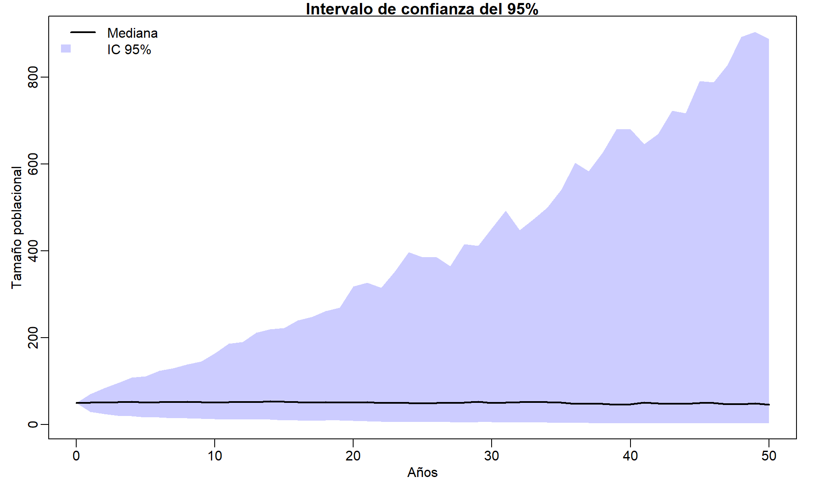
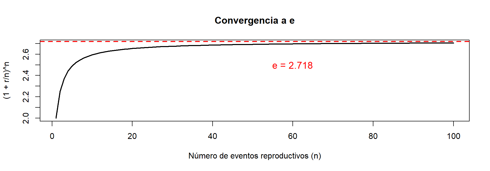
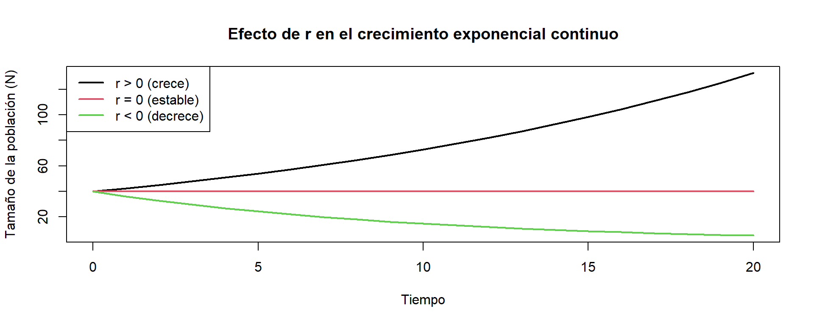
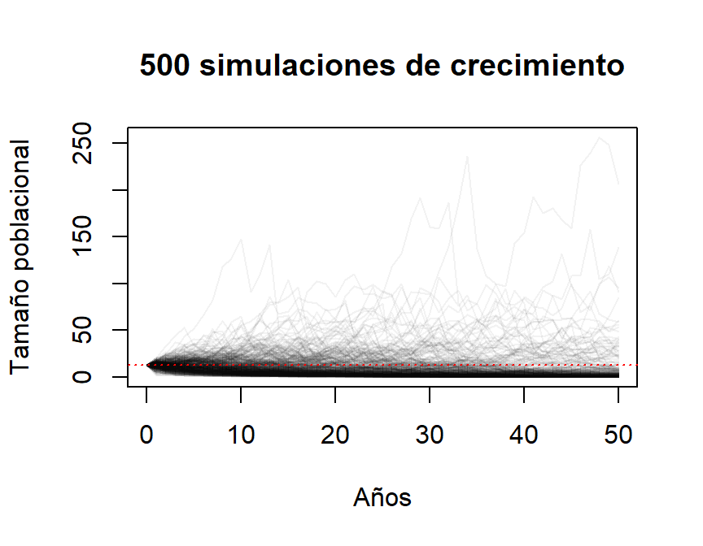
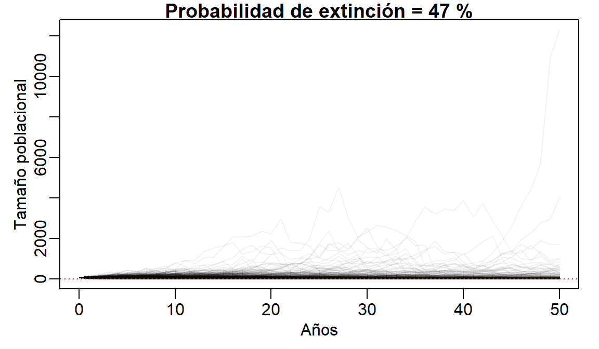
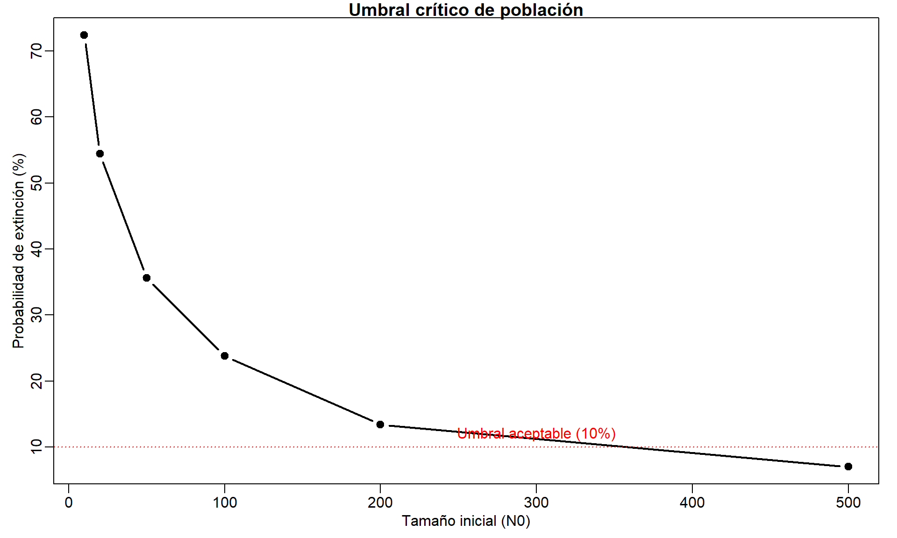

Clase 2.3 — Modelos continuos y simulaciones estocásticas
11/2026
Clase 2.3 — Crecimiento exponencial continuo
Carlos Iván Espinosa Universidad Técnica Particular de Loja
Al finalizar esta sesión, podrás:
En un laboratorio de la UTPL, un estudiante pone 1.000 bacterias E. coli en una caja de Petri. Al día siguiente, encuentra \(10^{10}\) bacterias.
¿Cómo describimos este crecimiento? ¿Se reproduce la población en un solo evento al día, o de forma continua?
El modelo geométrico asume eventos reproductivos discretos:
Pero muchas poblaciones no funcionan así:
El crecimiento geométrico depende de la periodicidad que asumimos.
Si \(\lambda = 1,5\) anual, la población crece un 50% por año.
¿Qué pasa si la reproducción ocurre en dos eventos al año?
\[N_1 = N_0 \left(1 + \frac{0,5}{2}\right)^2 = N_0 (1,25)^2 = N_0 \cdot 1,5625\]
Con dos eventos, la población crece un 56,25% anual, no un 50%.
A medida que aumentamos el número de eventos, el crecimiento se acerca a un límite.
Si el número de eventos reproductivos tiende a infinito:
\[\lim_{n \to \infty} \left(1 + \frac{r}{n}\right)^n = e^r\]
Donde \(e \approx 2,718\) es la base de los logaritmos naturales.

El crecimiento exponencial continuo es: \(N_t = N_0 \cdot e^{rt}\)
\[N_t = N_0 \cdot e^{rt}\]
Donde:
Interpretación de \(r\):

\(r > 0\) → crece; \(r = 0\) → estable; \(r < 0\) → decrece.
En la lectura anterior vimos que:
\[r = \ln(\lambda)\] \[\lambda = e^r\]
Ejemplos:
\(\lambda\) se usa en modelos discretos; \(r\) en modelos continuos. Miden lo mismo.
Si tenemos una serie de tamaños poblacionales en el tiempo:
Ejemplo: una población de mariposas calcular \(\lambda\) y \(r\)
| Tiempo | \(N_t\) |
|---|---|
| 0 | 10 |
| 1 | 25 |
| 2 | 89 |
| 3 | 160 |
| 4 | 312 |
| Tiempo | \(N_t\) | \(\lambda\) | \(r\) |
|---|---|---|---|
| 0 | 10 | — | — |
| 1 | 25 | 2,5 | 0,916 |
| 2 | 89 | 3,56 | 1,270 |
| 3 | 160 | 1,80 | 0,588 |
| 4 | 312 | 1,95 | 0,668 |
\(r\) varía entre intervalos: necesitamos un valor promedio.
Al igual que con \(\lambda\), la media geométrica es más adecuada que la aritmética:
\[\bar{r} = \left(\prod r_i\right)^{1/n}\]
Ejemplo: con los valores de la tabla: \(\bar{r} \approx 0,82\).
::: fragment La media geométrica captura el efecto multiplicativo del crecimiento. :::
Con \(\bar{r}\), podemos proyectar la población:
\[N_t = N_0 \cdot e^{\bar{r} \cdot t}\]
Ejemplo: con \(N_0 = 10\) y \(\bar{r} = 0,82\):
| Tiempo | \(N_t\) proyectado |
|---|---|
| 5 | 604 |
| 10 | 36.500 |
| 20 | \(1,3 \times 10^8\) |
El problema del crecimiento indefinido
Con \(r > 0\), la población crece exponencialmente. En la práctica, los recursos se agotan y el crecimiento se frena. Eso lo veremos con el modelo logístico.
Con \(N_0 = 100\) y \(r = 0,1\), ¿cuántos individuos habría en el año 50?
¿Es realista ese número?
A veces no nos interesa el tamaño futuro, sino cuánto tiempo tarda la población en alcanzar un tamaño determinado.
\[N_t = N_0 \cdot e^{rt}\]
\[\frac{N_t}{N_0} = e^{rt}\]
\[\ln\left(\frac{N_t}{N_0}\right) = rt\]
\[t = \frac{\ln(N_t / N_0)}{r}\]
Con \(N_0 = 10\) y \(r = 0,82\), ¿cuánto tarda la población en llegar a 1.000 individuos?
\[t = \frac{\ln(1000 / 10)}{0,82} = \frac{\ln(100)}{0,82} \approx \frac{4,605}{0,82} \approx 5,62 \text{ años}\]
En poco más de 5 años y medio, la población pasa de 10 a 1.000 individuos.
Un caso particular importante: ¿cuánto tarda la población en duplicar su tamaño?
\[t_{2} = \frac{\ln(2)}{r} \approx \frac{0,693}{r}\]
Ejemplo: con \(r = 0,82\):
\[t_2 = \frac{0,693}{0,82} \approx 0,85 \text{ años (unos 10 meses)}\]
Aplicación en conservación
El tiempo de duplicación es útil para evaluar la velocidad de recuperación de poblaciones amenazadas. Si una población de Tremarctos ornatus tiene \(r = 0,02\), su tiempo de duplicación es \(0,693 / 0,02 \approx 34,7\) años. Es una recuperación lenta: hay que planificar a largo plazo.
Con \(N_0 = 50\) y \(r = 0,05\), calculen:
- ¿Cuánto tarda la población en llegar a 500 individuos?
- ¿Cuál es el tiempo de duplicación?
- ¿Qué pasa con el tiempo si \(r\) se reduce a la mitad?
Hasta ahora hemos usado modelos deterministas: un solo valor de \(r\) produce una única trayectoria.
Pero en la realidad, las tasas varían entre años, y esa variación tiene consecuencias importantes.
Pregunta: si \(\lambda\) varía entre 0,5 y 1,5, ¿la población crece o decrece a largo plazo?
Si la media aritmética es 1,0, podríamos pensar que se mantiene estable. Pero la variación puede reducir la tasa de crecimiento a largo plazo.
El procedimiento es:
El resultado no es una trayectoria, sino una distribución de trayectorias posibles.

Cada línea es una trayectoria posible. La dispersión refleja la incertidumbre.
Las simulaciones no son solo ejercicios académicos. Permiten responder preguntas clave en conservación:
Se estima contando en cuántas simulaciones la población llega a cero.
Ejemplo: si en 1.000 simulaciones de una población de aves, 470 terminan con \(N = 0\) en 50 años, la probabilidad de extinción es del 47%.

¿Por qué una población con \(r\) promedio positivo puede extinguirse?
Porque la variación en las tasas puede llevar a la población a cero en algunos escenarios. La varianza es tan importante como la media.
En la simulación anterior, la probabilidad de extinción es del 47%.
- ¿Qué pasa con esa probabilidad si la media de \(\lambda\) aumenta a 1.02?
- ¿Y si la desviación estándar aumenta a 0.5?
¿Qué es más importante para la persistencia, la media o la varianza?
Los modelos deterministas dan una sola trayectoria. Las simulaciones dan muchas, y eso permite cuantificar la incertidumbre.
¿Cómo se hace?

La incertidumbre aumenta con el tiempo: cuanto más lejos proyectamos, más ancho es el intervalo.
En conservación, a menudo necesitamos saber: ¿cuál es el tamaño mínimo de población para que la especie persista?
Este concepto se llama población mínima viable (PMV). Se estima:

La PMV es el tamaño a partir del cual la probabilidad de extinción cae por debajo del umbral aceptable.
Ya vimos cómo calcular el tiempo para alcanzar un tamaño específico:
\[t = \frac{\ln(N_t / N_0)}{r}\]
Ejemplo: con \(N_0 = 50\) y \(r = 0,05\), ¿cuánto tarda en llegar a 500?
\[t = \frac{\ln(10)}{0,05} \approx 46 \text{ años}\]
Esto es útil para planificar la recuperación de poblaciones amenazadas.
Con \(N_0 = 100\) y \(r = 0,02\), ¿cuánto tarda la población en duplicarse? ¿Y en llegar a 1.000 individuos?
¿Qué implicaciones tiene para la conservación de una especie con \(r\) bajo?
| Aplicación | Pregunta | Herramienta |
|---|---|---|
| Probabilidad de extinción | ¿Riesgo de desaparecer? | Simulaciones estocásticas |
| Incertidumbre | ¿Rango de tamaños posibles? | Percentiles de simulaciones |
| Umbrales críticos | ¿Tamaño mínimo viable? | Simulaciones con distintos \(N_0\) |
| Tiempo de alcance | ¿Cuánto tarda en llegar a un tamaño? | Despeje de \(t\) |
Conexión con Loja
Estas herramientas se usan en programas de conservación de Tremarctos ornatus en el Podocarpus, o para evaluar la viabilidad de Cedrela montana en fragmentos de bosque de la hoya de Loja.
¿Qué especie de Loja le gustaría analizar con una simulación estocástica?
¿Qué pregunta de conservación podría responder?
Gracias.